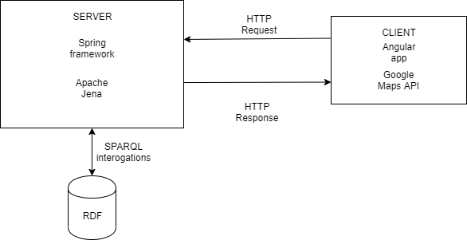

In this report we have highlighted the stages of the current project development, its description, the technologies used and the challenges encountered. Finally, we presented some conclusions and future improvements for our application.
Notis is a web application that offers the possibility to search for different entities as notaries and translators based on different searching criterias such as: proximity, type of documents that can be released, etc.
The application offer real-time locations on map (provided by Google Maps) on which we can indentify the user location or actual positions of the offices and estimates the time needed to travel to the desired destination using different types of transport (personal vehicle, bicycle, public transport, walking).
For each type of entity we display informations regarding the documents that can be released, their prices and general contact informations such as: telephone number and email address. Also, we can check which are the additional documents we need to provide and we can download templates for them in order to complete them and to not waste any precious time.
Application architecture is separated in two main components consisting of: the server application and the client application. In the image below we can visualize the main architecture.
The server application is written in Java. In Java we do all the processing that the application requires. Regarding technologies we are using: Spring Boot, Maven and Apache Jena.
Maven is used in order to resolve all imports of dependecies required for the project.
Spring Boot is used to accelerate and facilitate back-end application development. With the help of Spring we create a microservice which helps in processing of data necessary for client, through endpoints. There is an OpenAPI document that contains the main endpoints offered by our server can be found here.
We made use of Apache Jena framework to manipulate the RDF model and to interogate it via SPARQL. The rdf structure will be described in the next chapter.
For a better structure of a code, as design pattern we use MVC pattern where we split the code in three main parts:
The client web application is developed using Angular framework and runs on a NodeJS server.
In order to use a proper map on which the users can see the actual position of different offices across the country we made use of Google Maps API. The official documentation of this API can be consulted here.
Communication between server and client is made via HTTP requests.
RDF was generated using rdflib Python library. Data was provided in two excel documents and a Python script was used to filter the data, add missing information and to create a rdf document in the rdf/XML format.
The rdf contains two types of entities: Notary and Translator. Both entities are of type person. Their structure are very similar, only some minor differences are present. We can check the syntax for both entities below.
<ns1:notary rdf:about="http://example.org/people/MARIA_CREŢOI-DAVID">
<ns2:lastName>CREŢOI</ns2:lastName>
<ns2:address>
<rdf:Description rdf:about="https://address.org/id/JIBOU">
<ns2:street>STR. AVRAM IANCU NR. 2, BL. G11, AP. 2</ns2:street>
<ns2:county>SĂLAJ</ns2:county>
<ns2:city>JIBOU</ns2:city>
</rdf:Description>
</ns2:address>
<ns2:firstName>MARIA</ns2:firstName>
<ns2:phoneNo>0705788213</ns2:phoneNo>
</ns1:notary>
<ns1:notary rdf:about="http://example.org/people/MARIA_CREŢOI-DAVID">
<ns2:lastName>CREŢOI</ns2:lastName>
<ns2:address>
<rdf:Description rdf:about="https://address.org/id/JIBOU">
<ns2:street>STR. AVRAM IANCU NR. 2, BL. G11, AP. 2</ns2:street>
<ns2:county>SĂLAJ</ns2:county>
<ns2:city>JIBOU</ns2:city>
</rdf:Description>
</ns2:address>
<ns2:firstName>MARIA</ns2:firstName>
<ns2:phoneNo>0705788213</ns2:phoneNo>
</ns1:notary>